An interface is like an extremely abstract class—one that contains only abstract methods. Because all of its methods are abstract, you can never create an object directly from an interface, just as you can't directly create an instance of an abstract class.
An abstract class allows a designer to provide
general behavior in the abstract class, while forcing those
who extend the class to define particular methods (such as
the draw() method in the last section) before
they can create objects.
An interface works the same way, except this it doesn't provide any behavior; it only specifies what methods must be implemented.
Pure Specification
Think of regular inheritance as
specialization and
abstract classes as specification. You may, however,
find remaining places where you want to factor out common behavior.
The problem is that the objects sharing that common behavior are
otherwise unrelated. When this happens, that's where Java's
facility for writing a pure specification, the Java interface,
comes into play.
The interface mechanism differs from the forms of inheritance
we have discussed so far in three important ways:
- When a class
implementsaninterface, it doesn’t receive any method implementations or non-final fields from the interface. Interfaces can be used to define inherited constants, but they can’t be used to define non-constant data. Any fields defined within an interface are implicitlyfinal. - Unlike inheritance, a class may
implementseveral interfaces. This facility can be used to simulate multiple inheritance, where a subclass inherits behavior from each of several superclasses. This is the only way to model this kind of relationship in Java, which supports only single inheritance (every class other thanObjecthas exactly one direct ancestor). - Classes that
implementthe same interface don’t need to be substitutable in the Liskov sense, except with respect to the interface they implement. Thus, if a classimplementstheRunnableinterface, it is-aRunnableobject, and it can be used anywhere aRunnableobject is expected.Runnableobjects don’t have to be otherwise related, however. Because theyimplement Runnable, they must have arun()method; otherwise the class won’t compile. There’s no guarantee they’ll have any other methods or fields in common.
Why Interfaces Are Useful
An interface doesn't specify anything about how a class must implement a particular method—only that it must contain a particular set of methods having a particular signature.
When a class declares that it implements an interface, it makes a binding promise to provide a concrete implementation of every method of the interface. You can think of this promise as a contract. If you use an object that implements a particular interface, you know that it can respond to any method that the interface requires.
If a class fails to make good on its promise, the Java compiler will reject it. Thus, like abstract classes, interfaces make it possible to pre-determine that a given class will understand a particular set of methods. But, because a class can implement several interfaces, interfaces allow you to pre-determine that a given class will understand several entire sets of methods. The trade- off is that an interface cannot include even one concrete method.
Mix-ins and Multiple Inheritance
C++ is a popular object-oriented language that is similar to Java in many ways. In fact, C++ is Java's "father": Most of the syntax of Java is taken from C++ and its "father," C.
Unlike Java, C++ includes an object-oriented capability known as
multiple inheritance, which allows a subclass to be
derived from two (or more) superclasses. Multiple inheritance
can be a very handy thing. For example, it lets you create a
class AmphibiousVehicle from the parent classes
LandVehicle and WaterVehicle.
An AmphibiousVehicle can travel on land or water, and so
inherits wheels or treads from its LandVehicle parent, and
a prop or screw and rudder from its WaterVehicle
parent. You can't do this in Java, because Java classes can have
only one parent class.
Problems of Multiple Inheritance
Multiple inheritance is not all roses, however; that's why the
designers of Java decided to omit this capability. One problem
occurs when each of the parent classes has a method of the same
name. For example, what happens when you send a go()
message to an AmphibiousVehicle? Does it turn its
treads or its prop?
Certainly, you could implement a
go() method within AmphibiousVehicle that
eliminates the ambiguity, spinning the treads if the
vehicle is on land and the prop if the vehicle is on water.
Languages like C++ that support multiple inheritance
usually provide some mechanism for automatically resolving
such ambiguities.
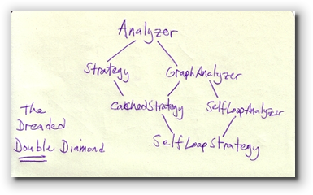
But when classes have parents, grandparents, and great-grandparents, and when each generation has two, three, or four of each, things get frightfully complicated. Given the limited memory and mental facilities of humans, a programmer may not be quite sure exactly what method will be executed in response to a given message."This," as the saying goes, "is not a good thing."
Java's Solution
Java cuts through this complexity by requiring that a class have only a single parent: this is called single inheritance. (C# and all of the languages in Microsoft's new .NET Framework also do this.) Thus, you always know exactly what method will be executed.
But multiple inheritance serves an important
function. It is important to be able to create classes that
understand several types of messages. Interfaces provide
that capability.
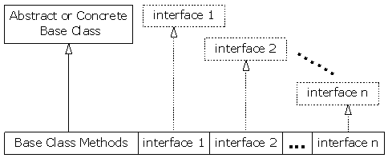
Because of this, we can say that Java allows multiple specification inheritance, but only single implementation inheritance.
Defining Interfaces
Like a public class,
an interface must be
placed in a file that has the same name as the interface, and that
has the extension .java. Inside the file, you define an interface
just as you would a class, substituting the keyword interface
for the keyword class in the header, like this:
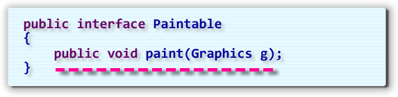
Because all methods in an interface must be abstract, you don't have to use theabstract
keyword in front of each one. You cannot supply a body for any
of the methods, of course; if you do so, Java will not compile
your code.
Using Interfaces
Instead of extending the interface, you use the
implements keyword to specify the
interface—or interfaces—that relate to a given class:
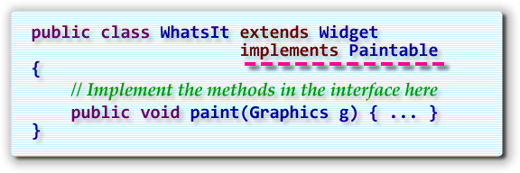
Here,WhatsIt is a subclass of Widget,
and, since WhatsIt implements the
Paintable interface, it must contain
a method with the signature: public void paint(Graphics g);.
Note that both the extends and implements
keywords are used together. Because every class in Java is a
subclass of another class, (except for Object, of
course), this will usually be the case, unless your new class
is a direct subclass of the Object class.
Note also that implements allows you to specify
more than one interface, unlike extends, and that you separate
the different interfaces with a comma (,).
Fields in Interfaces
In addition to abstract methods, an interface can include
fields; but the fields must be static final
and, therefore, must also be initialized:
public interface AnInterface
{
public int aMethod(int arg);
public int anotherMethod(int arg1, int arg2);
public static final int A_CONSTANT = 100;
}
Such fields are useful for defining constants used as arguments to methods defined by the interface. Constants defined in an interface are also quite useful when several classes in a package share the same common constant definitions. Because you can implement more than one interface, you can put all the common constants into a single interface and just have each class implement that interface in addition to any others it implements.
Constants defined in interfaces have one last benefit. If you write a class that implements an interface that contains constant fields, you can refer to those fields without the class or interface qualifier that would otherwise be required.
Hands-On Interfaces
Let's take a look at how interfaces
are used "in real life".
Back when we designed the Deck class in the last
chapter, you were
able to use the Collections.shuffle() static method
to shuffle the deck. This worked just fine, because the
shuffle method really didn't have to know anything
about the contents of the elements it was shuffling. If just
placed them in random order.
The Collections class also has a sort()
method that does the opposite of a shuffle; instead of placing the
elements of the list in random order, it places them in order
in a specific way.
Sorting the Deck of Cards
Open the Deck class in this chapter's code folder,
and go to the bottom, where you'll find the shuffle()
method and a placeholder for you to add your own sort()
method:
- Copy the entire
shuffle()method and paste it in the section marked Exercise 7. - Change the name of the method to
sort()and changeCollections.shuffle()toCollections.sort().
Surprisingly, while the shuffle() method worked just
fine, the sort() method seems to have a few problems:
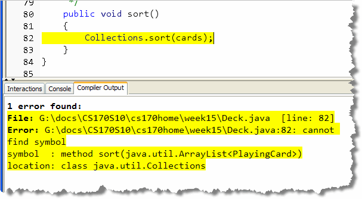
What's the Problem?
Why doesn't the code work? Because, while the sort()
method doesn't really care about what kinds of things it is
asked to sort, it really doesn't know how to sort
playing cards, any more than it would know how to sort eggs
or shirts. That's why the error message says that it doesn't
have a sort(java.util.ArrayList<PlayingCard>)
method.
For the sort() method to sort your cards, it has
to rely on the PlayingCard class itself to tell it
about the order into which the cards should be placed.
Of course since the PlayingCard and
Collection classes aren't related to each other,
they need a mechanism to ensure that the card class
will be able to keep up its end of the bargain.
As you might have guessed, this is done by implementing
an interface: specifically, the Comparable
interface.
Implementing Comparable
The Comparable interface is one of the most widely
used interfaces in the Java class libraries, with hundreds
of different classes from BigDecimal to
String implementing it. In fact, any time you
design a class where ordering is important, you'll implement
the Comparable interface. (Heads up: you may
be asked to do this on a programming exam as well.)
Implementing the interface is easy. Just add
implements Comparable<PlayingCard> to
the PlayingCard class header like this:
I usually put my implements lines below the class
heading as I've done here, so that the heading line doesn't
get too long.
Notice that when you add the implements line, you specify the
kind of thing that you want to compare. This is a
type parameter similar to that used when defining an
ArrayList. Like ArrayList there is an
older version of the Comparable interface that works
with plain Object references. Writing code for
the older-style interface requires you to do some extra casting,
is less efficient, and a little less "safe". There is no reason
to use the older interface unless your code has to run on a
pre-Java 5 JVM.
Still Problems?
Now, not only does our Deck class have errors,
but the PlayingCard class is broken as well.
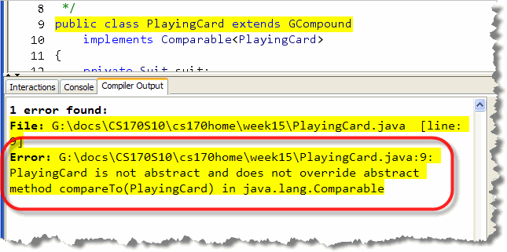
This is not a good sign. Well, you can relax. Remember that when you implement an
interface, you are signing a "contract" to supply certain
services. If you look up the documentation for the
Comparable interface, you'll see that
you are promising to supply the compareTo()
method:
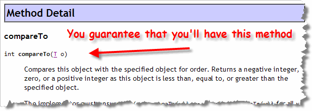
As you can see, the method takes a single parameter (in our case aPlayingCard) and returns 0 if the two
cards are the same, a positive number of the parameter is "greater
than" the current object, or a negative number of the parameter
is "less than" the current object.
Implementing compareTo
Here are some hints for implementing the method. First,
you need to check if you are comparing to "yourself".
You can do that by checking if this == other.
If that's the case, then you can just return 0, like this:
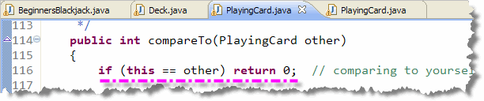
Next, you have to decide if you want the cards sorted in suit-major, or in rank-major order. In other words, do you want all of the Hearts, Spades and Clubs together (suit-major), or, do you want all of the 2s, 3s, 4s, etc. together (rank-major). Fortunately there is not much difference between the two.
All enumerated types, (like Rank and Suit),
already implement the compareTo() method.
You can use that to compare the ranks and suits of the two
cards and store the differences in a pair of int
variables like this:
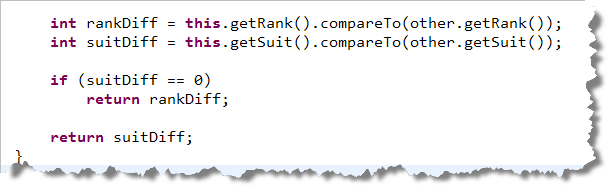
Then, if you want suit-major order, you compare suits. If they are the same, then you return the difference between ranks. If they are different, then return the difference between suits.To change this from suit-major to rank-major order, just rearrange the last three lines to compare ranks instead of suits.
CardSort Demo
To see if your sorting worked, open the CardSortDemo
program, and then compile and run it. Here's what you should see
when you add a new deck:
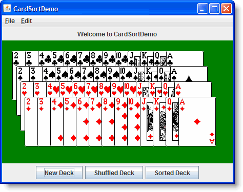
When you click the Shuffle button, you'll see the results like this: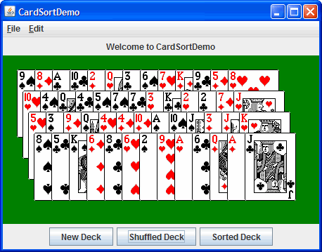
Finally, if you click the Sort button, you'll see the fruits of yourcompareTo() method: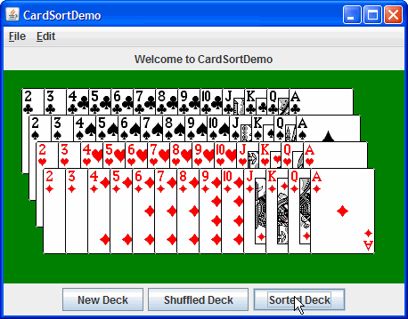

Interfaces Summary
- Interfaces are like abstract classes that may contain only abstract methods or constants.
- Interfaces are useful because they allow us to create a new "type" by specifying a common behavior. With interfaces we can group together unrelated types as if they were in the same class hierarchy.
- To use an interface, a class must implement, not extend it. A class may implement any number of interfaces, but extend only one. This means in Java we can have multiple-specification-inheritance but only single implementation inheritance. These classes are sometimes called mix-ins.
- When a class implements an interface, it promises to implement every abstract method that the interface contains. If it fails to do so, the code will not compile.
- An interface is saved in a Java source file, with the keyword
interfaceused instead ofclass. The interface and all of its methods must be public. All methods are abstract, but you don't use theabstractkeyword when defining them. - To use an interface and an
implementsclause to the class header, followed by any number of interface names. Separate each name with a semicolon. - You may place named constants inside an interface. The
constants must be
public,finalandstatic. - The
Comparableinterface is one of the most widely used interfaces in the Java class libraries. A class that implements this interface implements acompareTo()method that instructs its callers how to order its members.